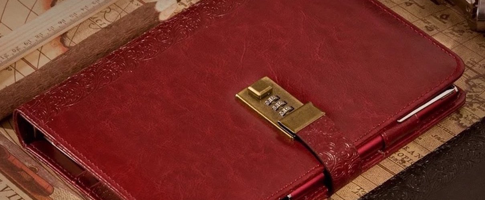

Business Journal
Whether it’s about work, family or memories, you will always need to record through writing. Our journals are designed with regards to the smallest of details to maximize the quality of your writing experience. With many different options to chose from, you will find a journal that best fits your taste and style.

The PU Leather Combination Lock Journal (Black/Coffee/Rose Red)

- Perfect for someone who is looking for a diary with lock, or diary with password, or an eleglent looking refillable notebook.
- High quality journal with lock and pen holder. This is binder notebook, or binder journal (leather refillable notebook)
- This Business Journal With Combination Lock (Or Diary With Combination Lock) is A5 size: 8.5 X 5.8 inch, or 21.5cm X 14.8cm. This is also a binder journal, or binder diary. It is made of high quality PU Leather.
- Buy on Amazon
Extra Large Journal With Combination Lock

- Perfect for someone who is looking for a journal with a lock, a refillable notebook, or diary with password. Especially if you are looking for an extra large journal (large notebook).
- High quality journal with lock and pen holder, also a refillable notebook.
- The extra large journal ( a refillable journal ), or a business journal with combination lock ( or diary with combination lock) is a big journal and a binder journal. Size: 11 X 7.9 Inch, or 28cm X 20cm. The journal cover is made of high quality black plastic.
- Buy on Amazon
Coffee Large Leather Journal

- High quality extra large leather journal. Size 10.6 X 8.3 inch (B5)
- This large leather notebook is also a leather binder journal, or a leather refillable journal.
- It is made of PU Leather. Warning: PU Leather (or Faux Leather) is not genuine leather!
- Buy on Amazon
Size A5 Genuine Thick Leather Journal

- The cover, which is also a leather binder, is made of the best quality thick leather. The color and texture of the leathers are all slightly different because these are all natural geniuine leathers without any artificial colors.
- The thick leather journal contains 100 lined sheets, or 200 lined pages. The handmade journal is also refillable.
- Size: A5: 9.6 X 6.8 Inch
- Buy on Amazon
The Embossed Leather Journal

- The cover, which is also a leather binder, is made of the best quality thick leather. The color and texture of the leathers are all slightly different because these are all natural geniuine leathers without any artificial colors.
- The thick leather journal contains 100 lined sheets, or 200 lined pages. The handmade journal is also refillable.
- Size: A5: 9.6 X 6.8 Inch
- Buy on Amazon